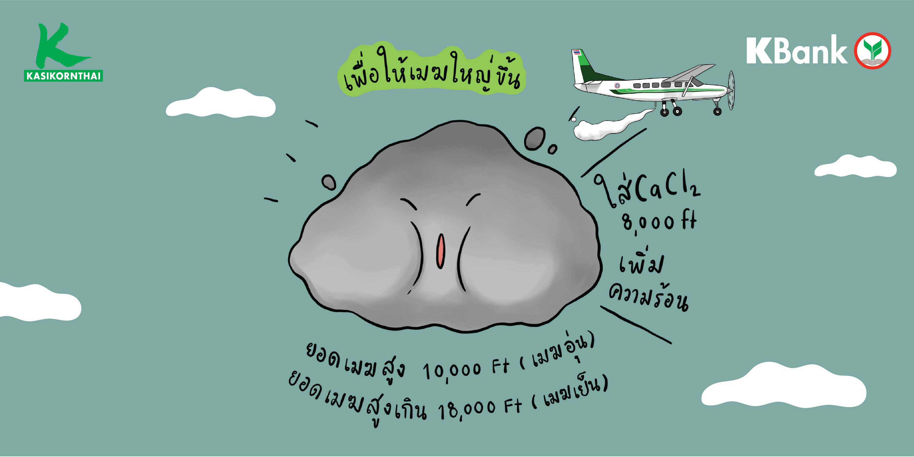
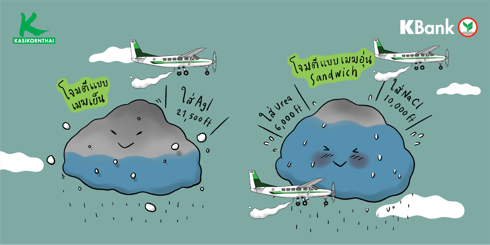
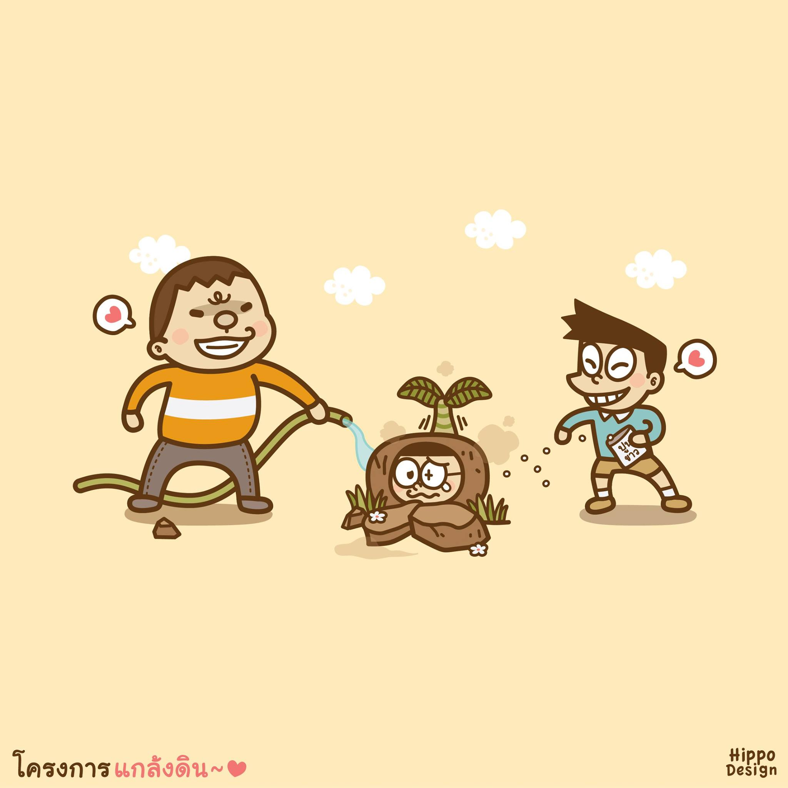
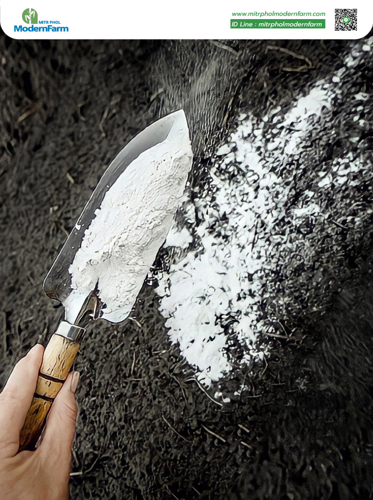
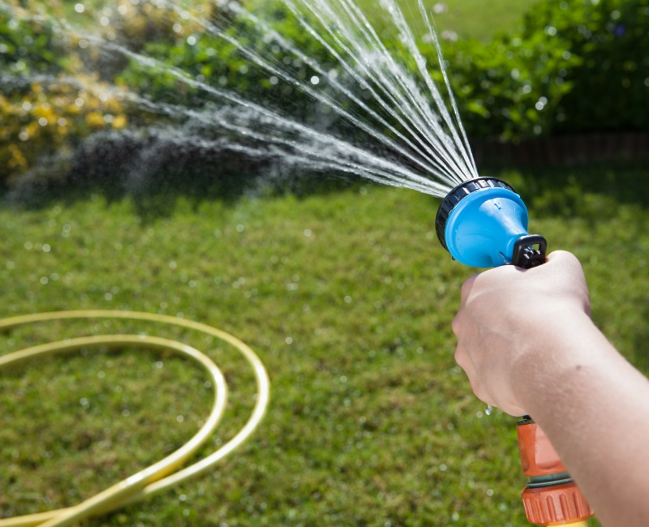
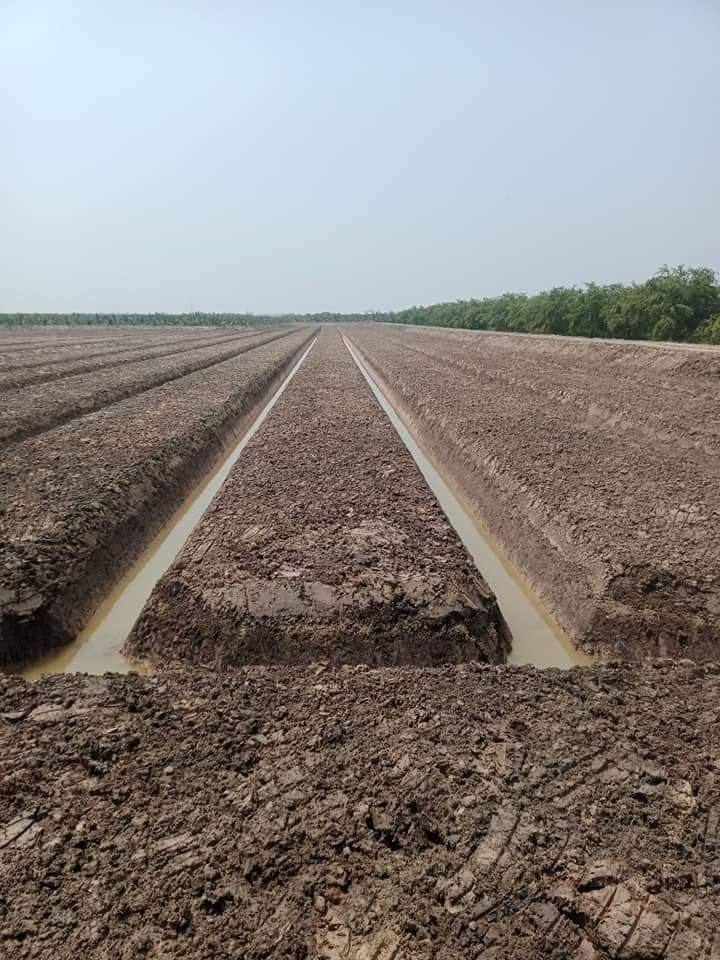
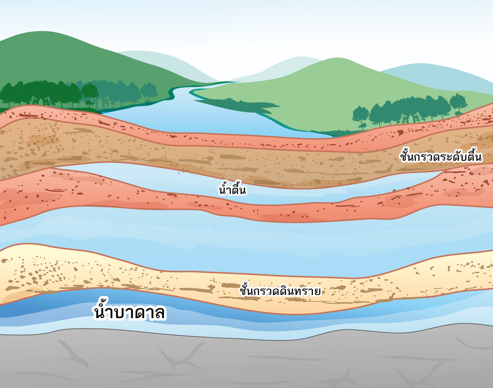
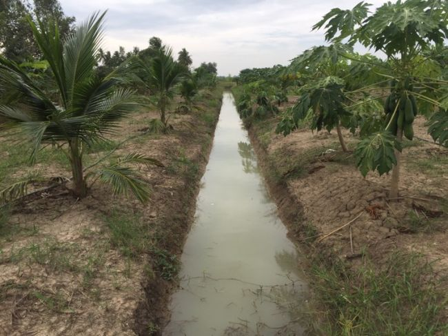

โครงการใน พระราชดำริ


© Rungnapha Aiamchukun
เป็นโครงการที่เกิดขึ้นจากพระราชดำริส่วนพระองค์ในพระบาทสมเด็จพระบรมชนกาธิเบศร มหาภูมิพลอดุลยเดชมหาราช เพื่อสร้างฝนเทียมสำหรับบรรเทาปัญหาความแห้งแล้งขาดแคลนน้ำในการเกษตร เมื่อคราวที่พระบาทสมเด็จพระบรมชนกาธิเบศร มหาภูมิพลอดุลยเดชมหาราช เสด็จพระราชดำเนินเยี่ยมเยียนพสกนิกร เมื่อปี พ.ศ. 2498 ในภาคตะวันออกเฉียงเหนือ ได้ทรงรับทราบถึงความเดือดร้อนทุกข์ยากของราษฎรและเกษตรกรที่ขาดแคลนน้ำอุปโภคบริโภคและการเกษตร จึงได้มีพระมหากรุณาธิคุณพระราชทานโครงการพระราชดำริ "ฝนหลวง"(Artificial rain) ให้กับ ม.ร.ว.เทพฤทธิ์ เทวกุล ไปดำเนินการ ซึ่งต่อมาได้เกิดเป็นโครงการค้นคว้าทดลองปฏิบัติการฝนเทียมหรือฝนหลวงขึ้น ในสังกัดสำนักงานปลัดกระทรวงเกษตรและสหกรณ์ เมื่อปี พ.ศ. 2512 ด้วยความสำเร็จของ โครงการ จึงได้ตราพระราชกฤษฎีการก่อตั้งสำนักงานปฏิบัติการฝนหลวงขึ้นในปี พ.ศ. 2518 ในสังกัดกระทรวงเกษตรและสหกรณ์ เพื่อเป็นหน่วยงานรองรับโครงการพระราชดำริฝนหลวงต่อไป ในวันที่ 24 มกราคม พ.ศ. 2556 รัฐบาลได้รับการก่อตั้งกรมฝนหลวงและการบินเกษตร ตามพระราชบัญญัติปรับปรุงกระทรวง ทบวง กรม (ฉบับที่ 10) พ.ศ. 2556 เปิดกรมฝนหลวงและการบินเกษตร ขึ้นเป็นกรมในกระทรวงเกษตรและสหกรณ์ปัจจุบัน มี นาย สำเริง แสงภู่วงค์ เป็นอธิบดี
เป็นขั้นตอนที่เมฆธรรมชาติเริ่มก่อตัวทางแนวตั้ง การปฏิบัติการในขั้นตอนนี้มุ่งใช้สารเคมีกระตุ้นให้มวลอากาศลอยตัวขึ้นสู่เบื้องบน เพื่อให้เกิดกระบวนการชักนำไอน้ำหรือความชื้นเข้าสู่ระบบการเกิดเมฆ ระยะเวลาที่จะปฏิบัติการในขั้นตอนนี้ไม่ควรเกิน 10.00 น. ของแต่ละวัน โดยการใช้สารเคมีที่สามารถดูดซับไอน้ำจากมวลอากาศได้ (แม้จะมีเปอร์เซ็นต์ความชื้นสัมพัทธ์ค่า critical relative humidity ต่ำ) เพื่อกระตุ้นกลไกของกระบวนการกลั่นตัวไอน้ำในมวลอากาศ (เป็นการสร้างสภาพแวดล้อมให้เหมาะสมต่อการเจริญเติบโตของเมฆด้วย) ทางด้านเหนือลมของพื้นที่เป้าหมาย เมื่อเมฆเริ่มก่อตัวและเจริญเติบโตทางตั้งแล้ว จึงใช้สารเคมีที่ให้ปฏิกิริยาคายความร้อนโปรยเป็นวงกลมหรือเป็นแนวถัดมาทางใต้ลมเป็นระยะทางสั้น ๆ เข้าสู่ก้อนเมฆ เพื่อกระตุ้นให้เกิดกลุ่มแกนร่วม (main cloud core) ในบริเวณปฏิบัติการ สำหรับใช้เป็นศูนย์กลางที่จะสร้างกลุ่มเมฆฝนในขั้นตอนต่อไป
เป็นขั้นตอนที่เมฆกำลังก่อตัวเจริญเติบโตซึ่งเป็นระยะสำคัญมากในการปฏิบัติการ เพราะจะต้องเพิ่มพลังงานให้แก่การลอยตัวขึ้นของก๊าซ (updraft) ให้ยาวนานออกไป ต้องใช้เทคโนโลยีและประสบการณ์การทำฝนควบคู่ไปพร้อมกันเพื่อตัดสินใจโปรยสารเคมีชนิดใด ณ ที่ใดของกลุ่มก้อนเมฆ และในอัตราใดจึงเหมาะสม เพราะต้องให้กระบวนการเกิดละอองเมฆสมดุลกับความแรงของ updraft มิฉะนั้นจะทำให้เมฆสลาย

เป็นขั้นตอนสุดท้ายของกรรมวิธีปฏิบัติการฝนหลวง เมฆ หรือ กลุ่มเมฆฝนมีความหนาแน่นมากพอที่จะสามารถตกเป็นฝนได้ ภายในกลุ่มเมฆจะมีเม็ดน้ำขนาดใหญ่มากมาย หากเครื่องบินเข้าไปในกลุ่มเมฆฝนนี้จะมีเม็ดน้ำเกาะตามปีกและกระจังหน้าของเครื่องบิน เป็นขั้นตอนที่สำคัญ ต้องอาศัยประสบการณ์มาก เพราะจะต้องปฏิบัติการเพื่อลดความรุนแรงของ updraft หรือทำให้อายุของ updraft หมดไป สำหรับการปฏิบัติการในขั้นตอนนี้ จะต้องพิจารณาจุดมุ่งหมายของการทำฝนหลวง ซึ่งมีอยู่ 2 ประเด็นคือเพื่อเพิ่มปริมาณฝนตก และเพื่อให้เกิดการกระจายการตกของฝน จึงทำให้เกิดฝนขึ้น


แกล้งดิน เป็นแนวพระราชดำริของพระบาทสมเด็จพระปรมินทรมหาภูมิพลอดุลยเดช เกี่ยวกับการแก้ปัญหาดินเปรี้ยว หรือดินเป็นกรด โดยมีการขังน้ำไว้ในพื้นที่ จนกระทั่งเกิดปฏิกิริยาเคมีทำให้ดินเปรี้ยวจัด จนถึงที่สุด แล้วจึงระบายน้ำออกและปรับสภาพฟื้นฟูดินด้วยปูนขาว จนกระทั่งดินมีสภาพดีพอที่จะใช้ในการเพาะปลูกได้
ใช้ปูน เช่น ปูนขาว ปูนมาร์ล เปลือกหอยบด หรือหินปูนฝุ่นใส่ลงไปในดินประมาณ 1-3 ตันต่อไร่ แล้วผสมให้เข้ากันปูนซึ่งเป็นเบสจะทำปฏิกิริยาสะเทินกับกรดกำมะถันในดิน ทำให้ดินมีสภาพเป็นกลาง

ใช้น้ำชะล้างกรดในดินโดยตรง วิธีการนี้ใช้เวลานานกว่าวิธีใช้ปูน แต่ได้ผลเหมือนกัน

ยกร่องเพื่อปลูกพืชไร่ ไม้ผล หรือไม้ยืนต้น โดยต้องมีแหล่งน้ำอยู่ข้าง ๆ เพื่อถ่ายเทน้ำได้ ถ้าน้ำในร่องเป็นกรดเมื่อใช้น้ำชะล้ำางกรดบนสันร่อง กรดจะถูกน้ำชะไปยังคูที่อยู่ด้านข้าง แล้วระบายออกไป และต้องคำนึงถึงการเกิดน้ำท่วมในพื้นที่ด้วย ถ้ามีโอกาสน้ำจะท่วม ก็ไม่ควรใช้วิธีนี้

ควบคุมระดับน้ำใต้ดิน ไม่ให้ต่ำกว่า 1 เมตร เพื่อป้องกันไม่ให้ดินชั้นล่างแห้ง หรือทำปฏิกิริยากับออกซิเจน ซึ่งควรจะต้องมีแหล่งน้ำจากระบบชลประทานเข้ามาช่วย

ใช้พืชพันธุ์ที่ทนทานต่อความเป็นกรดมาปลูกในดินเปรี้ยว เช่น มะม่วง มะขาม กระท้อน ขนุน ฝรั่ง ยูคาลิปตัส สะเดา อื่น ๆ

© Rungnapha Aiamchukun